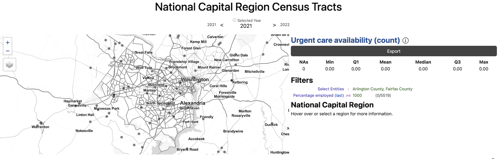
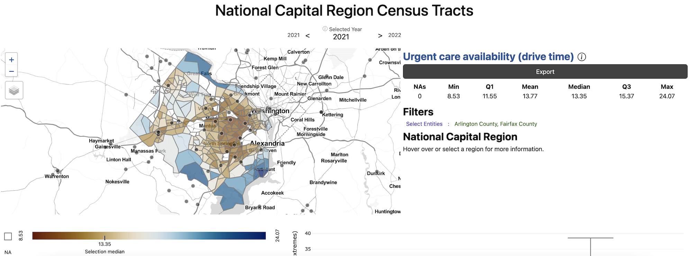
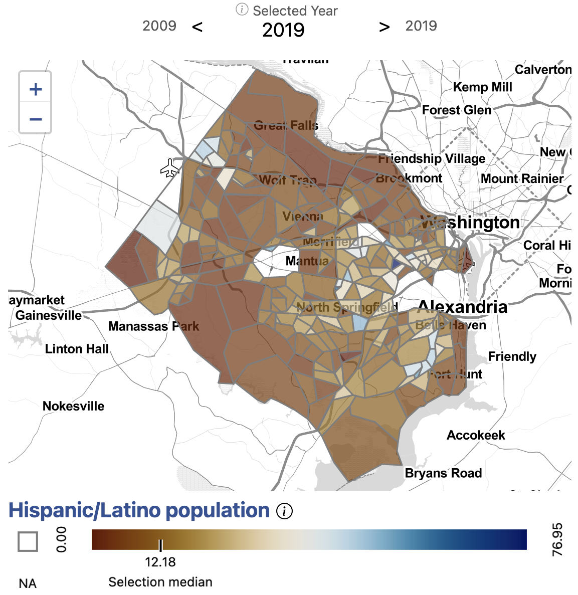
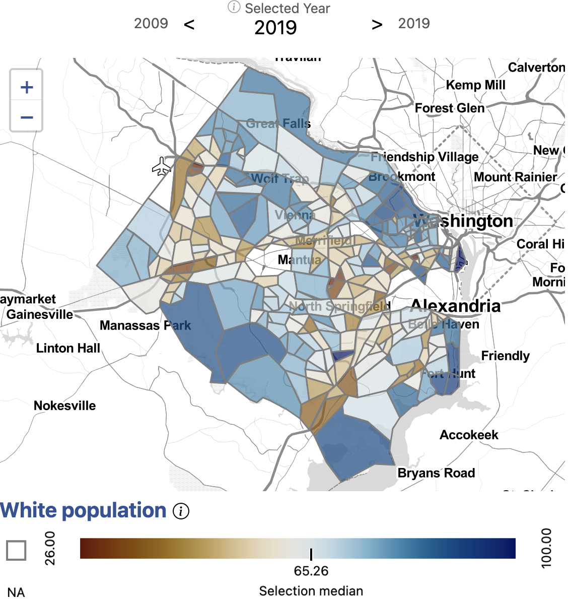
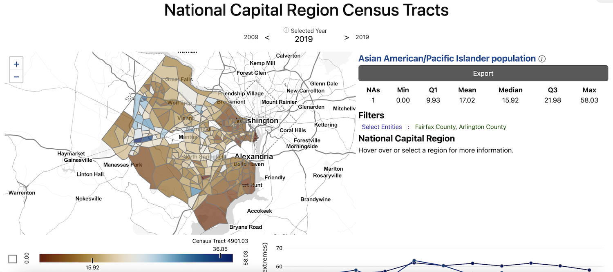
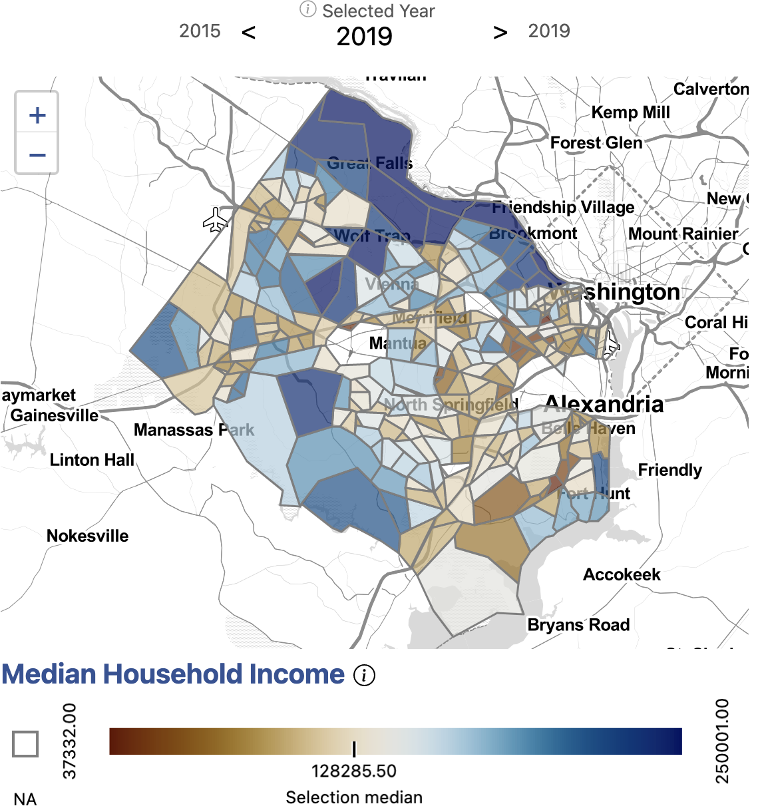

Our stakeholders in Arlington and Fairfax Counties were interested in understanding the equity of access to health services by neighborhood, by race, by household income, and by housing type. We began by choosing to analyze access to urgent care facilities, gathering data from the Google Maps. To get a better understanding of the idea of access, we compared several measures.

First, we began by began by examining the locations of urgent care. We found that there are 22 urgent care facilities in Fairfax and two facility in Arlington. We calculated access to urgent care by count, or presence of an urgent care in a given geography. For most census tracts, there is no urgent care present. Fairfax and Arlington residents who live in a census tract without an urgent care may be able to easily drive to one nearby, though.

The next measure of access we analyzed was drive time to the ten closest urgent care facilities. Here, we begin to see patterns of access emerge. Fairfax and Arlington residents who live in more urban areas or along major roads have greater access to urgent cares by drive time. In Fairfax, the highest average drive time to the ten closest urgent cares is over 24 minutes, while the lowest is eight minutes. Across Arlington, it can take as much as 18 minutes to drive to the closest urgent care and and as little ten minutes. Our measure of access, though, still does not take into account any population-level information.
Urgent care geographic availability map colored by value
Urgent care geographic availability map colored by rank
Next, we analyzed access to urgent care by geographic availability using three-step floating catchment areas. Three-step floating catchment areas is an aggregation of facilities per population ratio weighted by travel time. Here, we see an even fuller picture access to urgent care in the region. The areas with the lowest access to urgent cares are those with the highest drive times, areas bordering the Potomac and Pince William County. In these areas, facilities are both far by drive time and the population serviced by these urgent cares is large, so these residents have effectively lower access. The area with the greatest access is Centreville, which lies along a major highway in western Fairfax, bordering the relatively less-populated urban area of Manassas. Herndon is also comparatively well-serviced. The areas of lowest access in the region are Huntington and Fort Hunt near Alexandria City, northern Arlington, northern McLean, and Great Falls. North Springfield and southern Arlington also have comparatively low access to urgent care facilities.
   
After developing a comprehensive measure of access, we began to dig into the question of equity of access to urgent care facilities by demographics. We observed that the neighborhoods affected by low access to urgent cares have different demographic compositions. Northern Arlington, where the population is largely white and high income on average, has some of the lowest access to urgent cares in the region. The Southern Arlington and neighboring Bailey’s Crossroads and Annandale in Fairfax have higher Hispanic/Latino populations and lower income on average. These areas also have relatively average access to urgent cares. Bailey’s Crossroads is also characterized by a high Latino population and lower average household income. Centreville, McLean, and Tyson’s Corner have larger Asian American/Pacific Islander populations. Centreville has some of the highest access to urgent care in the region while McLean has some of the lowest access.
In addition to income and demographic variables, we could explore access to urgent care by additional factors affecting health equity, including primary language spoken at home or access to health insurance.
Having a comprehensive knowledge of the equity of access to urgent care within neighborhoods in Fairfax and Arlington counties empowers our local stakeholders to make more effective policy decisions to address and correct inequities.
Using the Social Impact Data Commons, we can explore access to additional health services along equity lines. For example, we can explore differences in access to hospitals, primary care physicians, or substance use facilities. We find that access to these services across Fairfax and Arlington do not necessarily follow the same pattern. Using specific measures, policymakers can make informed decisions to address health equity gaps.